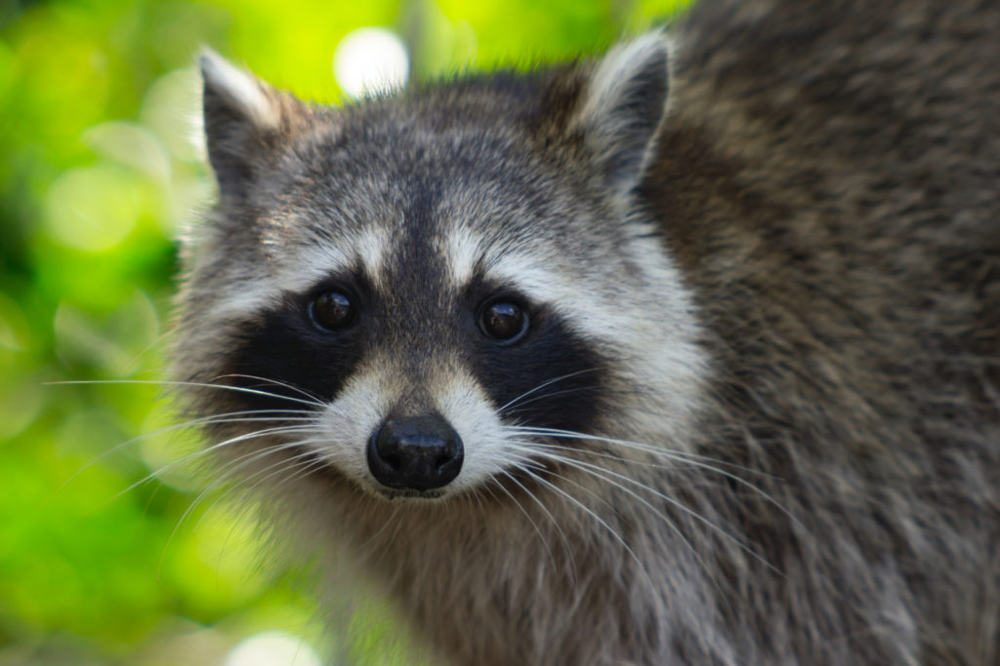

Caution
Humane Societies and Animal Control are not licensed to look after wildlife.
If you take a wild animal to them they may put it down. Ask First!
What To Do?
When you find that little huddle of wildlife—raccoons or skunks, squirrels or possums, groundhogs, porcupines, beavers, these are things you can do!
- Access the situation carefully—is the mother likely to return? Are cars, dogs, other wild animals, or even other humans, a threat? If it is safe, and possible, you might watch for a while and see if a mother does return. However, if the area is one of traffic and human activity, the likelihood is slim.
- Contact wildlife rescue centers by phone. Do not use email in an animal emergency. Call before taking an animal to a wildlife rescue center. They may not be able to take it. Before you turn the animals over to them, ask questions. How will it be taken care of? Will it be euthanized? What is its future? Be satisfied!
- Use gloves, or a blanket or towel, to pick up it—it will be frightened and will not know you are a friend. Put it deep in a dark box, with warm towels and blankets—or even your old sweaters! Darkness and warmth are very, very necessary. So is quietness. Handle as little as possible. If it is a bird of prey (hawk, eagle, owl) or large mammal (bears, moose, etc.) talk to a wildlife rescue center first. These types of animals even if injured can be dangerous to handle.
- Best case scenario is for you to do nothing to the orphan, besides getting it to a rehabber. However, if you are having trouble finding a rehabilitator to take the orphan, or give advice on how to keep it alive until you do find one, and you believe nourishment is necessary to keep it alive, you must warm and rehydrate orphaned first. If the baby does not feel warm, do not feed it, as it will die. Hot water bottle wrapped in towel [even pop bottle] can work. Rehydrate first using pedialyte or Gatorade. If old enough they might lap, if not administer with a 1 or 3 cc syringe [no needle], slowly, so they do not aspirate the fluids and you can measure how much the animal has taken. This can sustain them a day or two. Never give cows milk it will kill them. Some species tolerate goats milk some do not. Espilac puppy formula or KMR kitten formula can be used with most mammals until a rehabber can take them. A raccoon can use a human baby bottle and nipple, other mammals cannot so continue using they syringe [it is better than an eyedropper]. All fluids should be warm, just like feeding a human baby.
- Keep yourself clean, use gloves if possible, wash your hands after handling an animal, keep yourself, the animal and the box clean.
- Realize it is illegal to keep any wild animal as a pet.
- Realize it will want to live the free life for which it was intended. The time will come, when it is mature and would be breaking the bond with its own parent in the wild, and it is given to an accredited place, where that will be its future.

Caution
Do not use email regarding an animal emergency!
Contact a wildlife rescue centre by phone only!

How to help out?
Check out our wildlife calendar! All profits made goes to support injured and orphaned wildlife in Ontario.